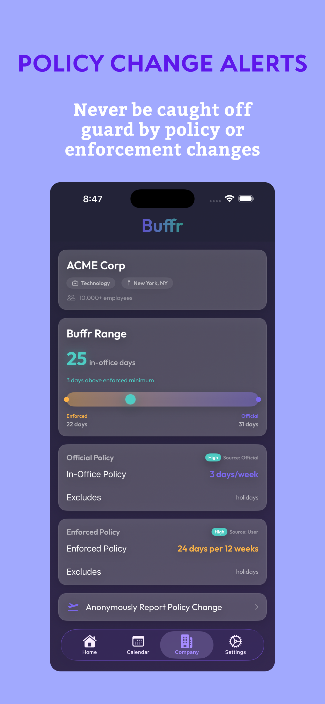
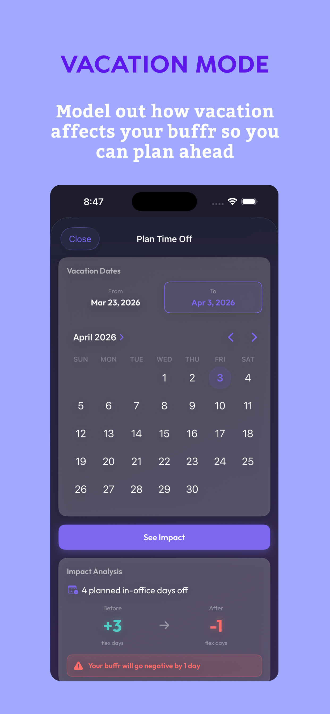
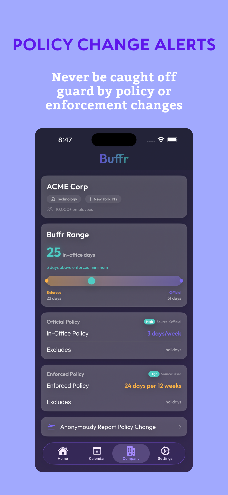
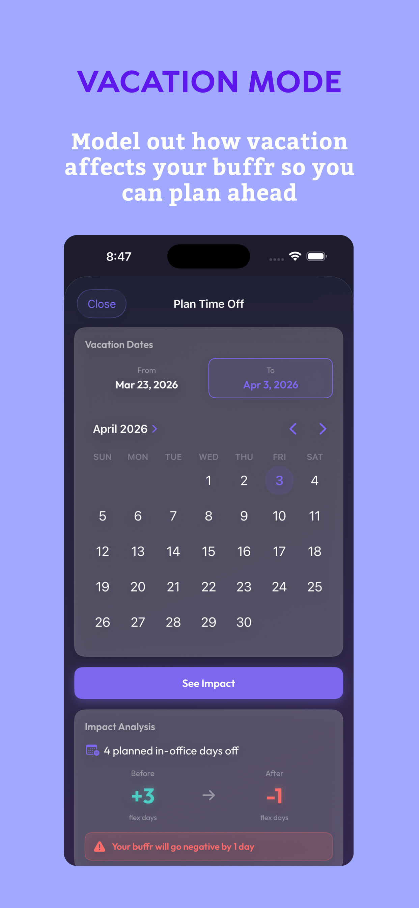
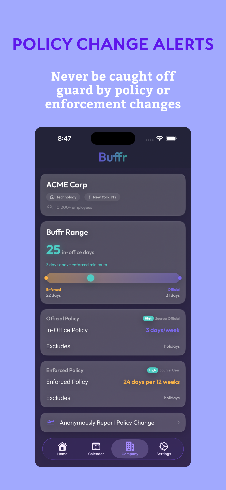
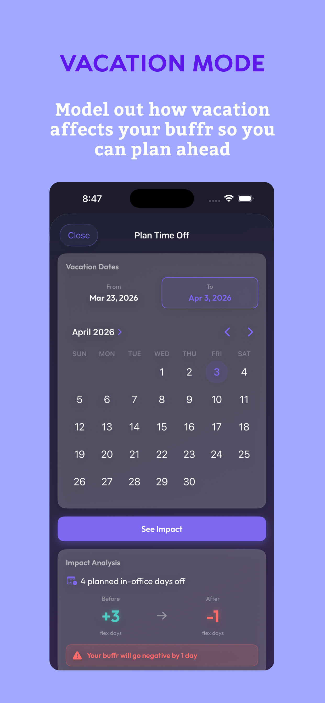

Your company has a return to office policy. Do you know where you stand?
Download on the App Store


Log office, WFH, vacation, sick, or holiday in seconds
Know exactly how many flex days you have before hitting your limit
Spot compliance gaps weeks in advance and plan around them
Auto-detect your company's official and enforced RTO policies from our database
Model how time off affects your buffer before you book it
Your data stays on your device. No accounts, no tracking, no employer access.
An RTO tracker helps hybrid workers monitor their office attendance against their company's return-to-office policy. Instead of manually counting days in a spreadsheet, an RTO tracker like Buffr automatically calculates how many office days you've completed, how many you still need, and how much flexibility you have left in your schedule.
Buffr lets you log each workday as office, work from home, vacation, sick, or holiday with a single tap. It then calculates your "buffer" — the number of extra office days you have beyond your company's minimum requirement. Buffr supports both weekly policies (e.g., 3 days per week) and rolling window policies (e.g., 16 days per 8 weeks).
Buffr maintains a database of RTO policies for many companies. When you search for your company during setup, Buffr can auto-detect both the official policy and how it's actually enforced. You can track against either one, or set up custom rules. If your company isn't in our database, you can configure your policy manually in under a minute.
No. Buffr is completely private. All your attendance data is stored locally on your device and is never sent to any server. Your employer has no access to your data, and Buffr doesn't require an account or login. There's no way for anyone — including us — to see your office attendance records.
Buffr supports two common RTO policy types: days per week (e.g., 2 or 3 required office days every week) and days per rolling window (e.g., 16 office days over a rolling 8-week period). You can also configure which days count toward your requirement, exclude holidays and vacation days, and set a default weekly schedule.
Buffr is free to download and use. Core features like day logging, buffer calculation, and calendar view are included for free. Buffr Pro unlocks advanced features like multi-week forecasting, company policy intelligence, vacation impact analysis, policy change alerts, and buffer notifications.
Unlike a spreadsheet, Buffr automatically calculates your rolling compliance in real time, forecasts weeks ahead to spot potential gaps, and gives you a clear "buffer" number so you always know where you stand. It takes one tap to log a day instead of manually updating formulas, and it handles edge cases like holidays, sick days, and vacation automatically.